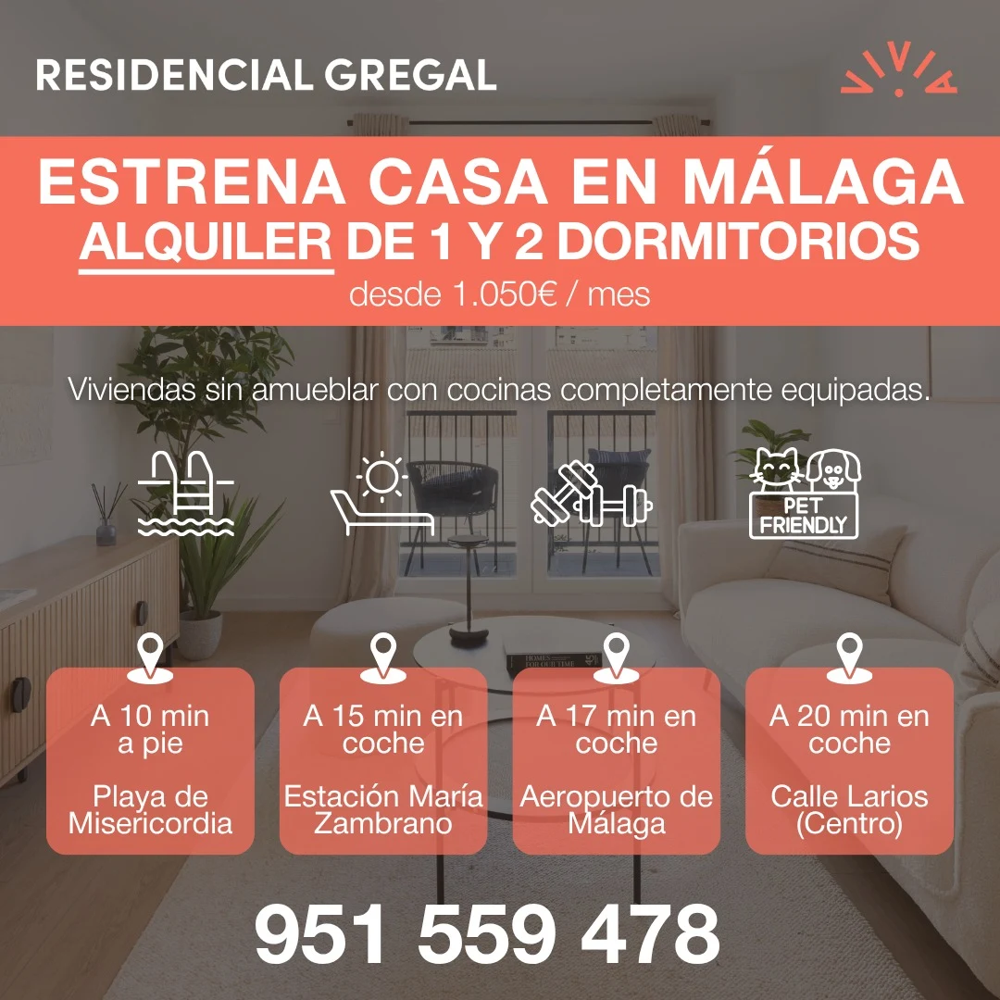

Residencial Gregal
Landing en WordPress y campañas de captación en Google Ads y Meta para una promoción de obra nueva.
WordPress landing page and lead-generation campaigns on Google Ads and Meta for a new-build development.
- Sector
- Inmobiliario · obra nuevaReal estate · new build
- AñoYear
- 2025
- Mi rolMy role
- Diseño y montaje de la landing en WordPress y diseño de las creatividades de campaña.Design and build of the WordPress landing page, and design of the campaign creatives.
- EntregablesDeliverables
- Landing de captación, creatividades para Meta y Google Ads, adaptaciones por formatoLead-gen landing page, Meta and Google Ads creatives, format adaptations
- HerramientasTools
- WordPress · Illustrator · Canva · Google Ads · Meta Ads
01El retoThe challenge
La promoción necesitaba contactos cualificados a un coste por lead asumible. Las campañas de Google Ads y Meta tenían que llevar a una única página pensada para convertir.The development needed qualified leads at a sustainable cost per lead. Google Ads and Meta campaigns had to drive to a single page built to convert.
02ProcesoProcess
- Un solo objetivo por páginaOne goal per page
Sin menú que distraiga: propuesta y formulario arriba; renders y ubicación debajo, como prueba.No distracting menu: pitch and form up top; renders and location below, as proof.
- Anuncio y landing, la misma piezaAd and landing as one piece
Creatividades y landing comparten imagen y mensaje, para que el clic no rompa la expectativa.Creatives and landing share imagery and message, so the click never breaks expectations.
- El formulario siempre a manoThe form always within reach
El CTA se repite en cada bloque para no obligar a volver arriba.The CTA repeats in every block so nobody has to scroll back up.
03SoluciónSolution
Además de la landing, diseñé las creatividades para Meta y Google Ads: piezas verticales, cuadradas, horizontales y en vídeo, coherentes con la página de aterrizaje.Beyond the landing, I designed the creatives for Meta and Google Ads: vertical, square, horizontal and video pieces, consistent with the landing page.

